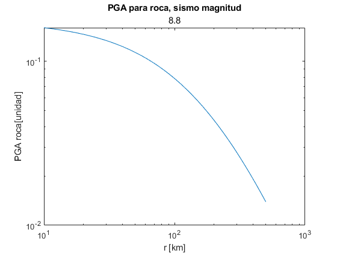
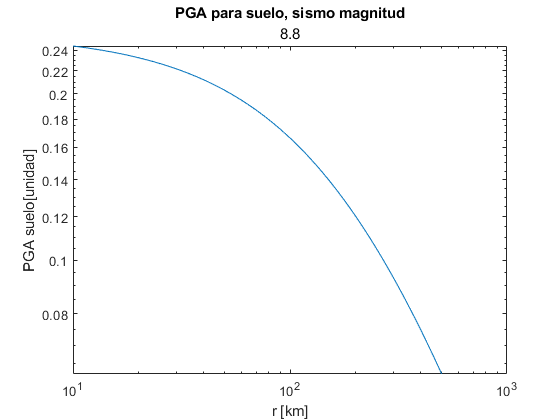
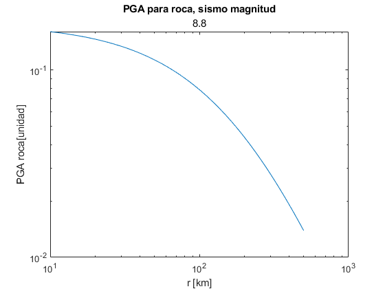
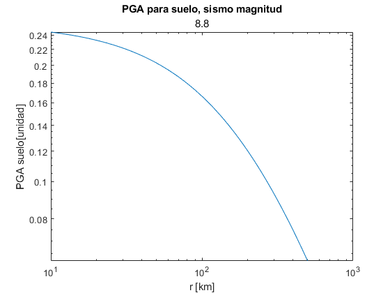

Contents
Inicializar
clear variables close all clc
P1
P1.1
$PGA_{rock} = \exp{0.2418 + 1.414 M_w + C_1 + C_2 (10 - M_w)^3 + C_3 log(r + 1.788 \exp{0.554M_w}) + 0.00607 H + 0.3846 Z_T$
Error updating Text.
String scalar or character vector must have valid interpreter syntax:
$PGA_{rock} = \exp{0.2418 + 1.414 M_w + C_1 + C_2 (10 - M_w)^3 + C_3 log(r + 1.788 \exp{0.554M_w}) + 0.00607 H + 0.3846 Z_T$
C1_rock = 0.00; C2_rock = 0.00; C3_rock = -2.552; C4_rock = 1.45; % * Standard deviation for magnitud greater than 8 is equal to the value for magnitud equal to 8 C5_rock = -0.1; % * % Para suelo (soil) C1_soil = 0.00; C2_soil = 0.00; C3_soil = -2.329; C4_soil = 1.45; C5_soil = -0.1; Zt_var = 0; H_var = 37; Mw_vector = [7.0; 8.0; 8.8]; r = (10:1:500).'; for Mw = 1:3 Mw_var = Mw_vector(Mw,1); for r_var = 1:length(r) puntos_rock(r_var,Mw) = exp(0.2418 + 1.414*Mw_var + C1_rock + C2_rock*(10-Mw_var)^3 + C3_rock*log(r(r_var,1) + 1.7818*exp(0.544*Mw_var)) + 0.00607*H_var + 0.3846*Zt_var); puntos_soil(r_var,Mw) = exp(-0.6687 + 1.438*Mw_var + C1_soil + C2_soil*(10-Mw_var)^3 + C3_soil*log(r(r_var,1) + 1.097*exp(0.617*Mw_var)) + 0.00648*H_var + 0.3643*Zt_var); end fprintf('Mw %f Roca \n',Mw_var) figure loglog(r,puntos_rock(:,Mw)) xlabel('r [km]') ylabel('PGA roca[unidad]') title('PGA para roca, sismo magnitud', Mw_var) fprintf('Mw %f Suelo \n',Mw_var) figure loglog(r,puntos_soil(:,Mw)) xlabel('r [km]') ylabel('PGA suelo[unidad]') title('PGA para suelo, sismo magnitud', Mw_var) end
Mw 7.000000 Roca Mw 7.000000 Suelo Mw 8.000000 Roca Mw 8.000000 Suelo Mw 8.800000 Roca Mw 8.800000 Suelo


P1.2
Para un periodo de ![$T_n = 2.0 [sec]$](Tarea_2_sismica_v2_eq14957162917779111852.png) y un amortiguamiento de
y un amortiguamiento de 
% Para roca C1_rock = -3.328; C2_rock = -0.0080; C3_rock = -2.1070; C4_rock = 1.55; C5_rock = -0.1; % Para suelo C1_soil = -6.433; C2_soil = -0.0164; C3_soil = -1.290; C4_soil = 1.55; C5_soil = -0.1; for Mw = 1:3 Mw_var = Mw_vector(Mw,1); for r_var = 1:length(r) puntos_rock(r_var,Mw) = exp(0.2418 + 1.414*Mw_var + C1_rock + C2_rock*(10-Mw_var)^3 + C3_rock*log(r(r_var,1) + 1.7818*exp(0.544*Mw_var)) + 0.00607*H_var + 0.3846*Zt_var); puntos_soil(r_var,Mw) = exp(-0.6687 + 1.438*Mw_var + C1_soil + C2_soil*(10-Mw_var)^3 + C3_soil*log(r(r_var,1) + 1.097*exp(0.617*Mw_var)) + 0.00648*H_var + 0.3643*Zt_var); end fprintf('Mw %f Roca \n',Mw_var) figure loglog(r,puntos_rock(:,Mw)) xlabel('r [km]') ylabel('PGA roca[unidad]') title('PGA para roca, sismo magnitud', Mw_var) fprintf('Mw %f Suelo \n',Mw_var) figure loglog(r,puntos_soil(:,Mw)) xlabel('r [km]') ylabel('PGA suelo[unidad]') title('PGA para suelo, sismo magnitud', Mw_var) end
Mw 7.000000 Roca Mw 7.000000 Suelo Mw 8.000000 Roca Mw 8.000000 Suelo Mw 8.800000 Roca Mw 8.800000 Suelo


  
 